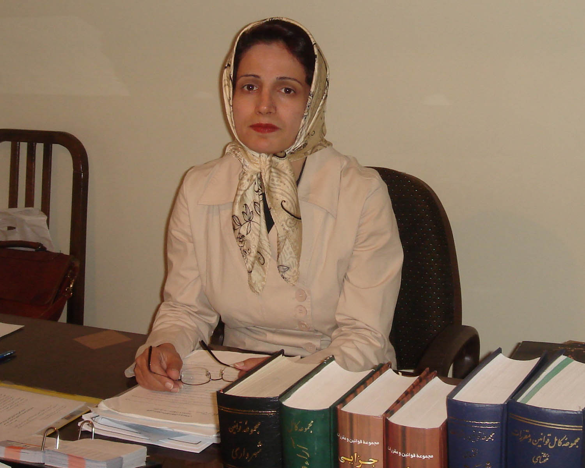

پذيرش > سایت نوشته ها > تضييع حق زنان براي حضانت؛ مرثيهاي فراتر از دلتنگي
 گفت و گو با نسرين ستوده، وكيل دادگستري: گفت و گو با نسرين ستوده، وكيل دادگستري:

 تضييع حق زنان براي حضانت؛ مرثيهاي فراتر از دلتنگي تضييع حق زنان براي حضانت؛ مرثيهاي فراتر از دلتنگي
20 آبان 1385 - گفت و گو : مريم حسينخواه/روزنامه اعتماد ملي - نسخه قابل چاپ
مادري فقط به دنيا آوردن كودك و بزرگ كردن او نيست.مادري هم تكليف است و هم حق. حق مادري اما در قوانين ما چندان به رسميت شناخته نميشود و آنگونه كه «نسرين ستوده» وكيلي كه سالها در زمينه حقوق كودكان فعاليت كرده است، ميگويد:«حقوق زن و مرد در قبال فرزندشان مساوي نيست.»، گفت و گويي را كه با ستوده درباره حقوق مادر و وضعيت او در قبال ولايت و حضانت فرزندانش داشتهايم، بخوانيد:
خانم ستوده، حقوق يك زن به عنوان مادر، تا چه حد در قانون ما به رسميت شناخته شده است و آيا زن و مرد به ميزان برابر نسبت به كودكشان محق هستند؟
قاعدتا وقتي كودكي به پدر و مادر منتسب ميشود و درپيدايش كودك، پدر و مادر هردو نقش دارند، قانون بايد به تساوي حقوق و تكاليفي را به آنها تحميل كند.اما وقتي قانون را مطالعه كنيم مي بيينم كه حقوق زن و مرد در قبال فرزندشان مساوي نيست. اين موضوع نيز از ديد كلي قانون گذار ما ناشي ميشود كه ميگويد رياست خانواده از خصائص شوهر است. بديهي است وقتي قانونگذار چنين نگاهي به نقش مرد در خانواده دارد كه گويي اساسا رئيس به دنيا آمده، تمامي تعاملات درون خانواده از جمله حق و حقوق نسبت به فرزندان مشترك را نيز تابعي از حاكميت و مالكيت مرد قلمداد ميكند.
در چه مواردي اين نابرابري بين حقوق پدر ومادر وجود دارد؟
قانون گذار در ماده 1180 به بعد قانون مدني ميگويد ولايت پدر و جد پدري بر فرزند قهري است. يعني اگر پدر با همسر خودش در مورد ولايت فرزند مشتركشان به توافق هم رسيدند آن توافقات بي اعتبار است و پدر نميتواند ولايت خودش را به مادر منتقل كند.
ولايت بر كودك چه مواردي را شامل ميَشود و اصولا چه تفاوتي با حضانت دارد؟
حضانت فقط به نگهداري كودك و مواظبت از او اطلاق مي شود به اصطلاح اينكه غذايش را بدهند و مراقب باشند كه بلايي سرش نيايد.اما ولايت مفهوم جداگانهاي دارد و به معناي اداره امور كودك است.يعني اگر كودك داراي اموالي است كه نياز به اداره دارد. فقط پدر مي تواند درباره آن اموال تصميم بگيرد كه آيا آنها را بفروشد، منتقل كند و يا تبديل كند.
اجازه خروج از كشور و عمل جراحي پزشكي هم جزو اختيارات ولي كودك هستند؟
بله و و اگر مادري حضانتي فرزندش را هم بر عهده داشته باشد براي اين امور بايد از پدر كسب اجازه كند.
در صورتيكه پدر فوت كند اين ولايت به مادر مي رسد؟
نخير. به جد پدري مي رسد.يعني پدربزرگ پدري بچه كه آن هم قهري است و نميتواند به مادر منتقل شود. در مواردي هم كه پدر و جد پدري هر دو فوت كرده باشند، تصميم براي تعيين ولي كودك با دادگاه است و باز هم دادگاه نميگويد كه در صورت فوت پدر و جد پدري، ولايت با مادر است ، بلكه ميگويد دادگاه بايد تصميم بگيرد.
و معمولا دادگاه در اين شرايط ولايت را به مادران مي دهد؟
در بسياري از موارد ميدهند.
وقتي دادگاه اين ولايت را به مادر نميدهد، سرپرستي اموال كودك و مسائل ديگري كه در ارتباط با ولايت هستند ، چطور اداره ميشوند؟
اداره سرپرستي بايد براي اداره اموال كودك فكري بكند و اگر هم ولايت كودك را به مادر ندهد و به دلايلي بگويد كه مادر صلاحيت ندارد، به شخص ديگري مثلا عمو يا دايي بچه اين ولايت را ميدهد.اما به هرحال تصميم در اين مورد به عهده دادگاه است و مادر هيچ نقشي در آن ندارد.
من در گفتگو با مادراني كه ولايت بچههايشان را بر عهده دارند، شنيدهام با وجود اينكه آنها رسما ولي فرزندانشان هستند اما اداره سرپرستي هم بر اعمال اين مادرها و به خصوص عملكردشان در قبال اموال و داراييهاي فرزندانشان نظارت مي كند ، آيا واقعا همينطور است؟
بله،بر اساس قانون هنگامي كه مادر در نبود پدر و جد پدري ولايت فرزندانش را بر عهده دارد، همراه با اعمال ولايت مادر اداره سرپرستي هم نظارتش را دارد.
وقتي پدر يا جد پدري ولايت كودك را بر عهده داشته باشند چطور؟ آن وقت هم اداره سرپرستي بر اعمال ولي در قبال كودك نظارت ميكند؟
هنگامي كه اداره و سرپرستي امور بچه با پدر است. اداره سرپرستي نظارت ندارد.ژ و فقط در مواردي كه كسي برود و گزارش بدهد كه پدر، اموال بچه را از بين ميبرد و حيف و ميل ميكند ، آنها وارد عمل ميشوند. ولي وقتي اين ولايت با مادر است، مادر هر عملي كه بخواهد انجام بدهد بايد به اداره امور سرپرستي گزارش بدهد و در حقيقت حتي اگر مادري بتواند ولي فرزندش باشد بازهم با ولايت پدر يك تفاوت درجه اي دارد و به همان اندازه و با همان حقوق نيست.
حتي اگر پدري صلاحيت حضانت فرزندش را نداشته باشد و دادگاه حضانت را به مادر بدهد، باز هم اين ولايت وجود دارد؟ و مادر براي اداره امور مالي و حتي سلامت فرزندش از پدر اجازه بگيرد؟
بله حتي اگر پدر صلاحيت حضانت فرزندش را نداشته باشد،ولايت او همچنان وجود دارد و براي اينكه سلب صلاحيت از ولايت بشود بايد يك اقدام جداگانه كرد.يعني سلب صلاحيت براي حضانت الزاما به مفهوم سلب ولايت نيست.
سلب ولايت چطور انجام ميشود؟
شما مي توانيد برويد دادگاه و اعلام كنيد كه پدر در اداره اموال كودك خيانت كرده و چيزي از آن باقي نگذاشته است با اثبات مواردي از اين دست شايد بتوان از پدر براي ولايت سلب صلاحيت كرد.
احتمال اينكه دادگاه به اين سلب ولايت از پدر راي بدهد چقدر است؟
من تا كنون با چنين موردي برخورد نكردهام كه ولايت از پدري سلب شود و اساسا دادگاهها در قبال اين ادعاها مقاومت ميكنند.
به غير از ولايت در چه موارد ديگري اين نابرابري بين پدر و مادر در حقوقي كه نسبت به فرزندانشان دارند ديده ميشود؟
يك بحث ديگر هم بحث حضانت است. در مورد حضانت طبق قانون ايران اصل بر اين است كه حضانت از بدو تولد تا 7 سالگي بر عهده مادر است. از 7 سالگي تا سن بلوغ كه در دخترها 9 سال و در پسرها 15 سال است، حضانت با پدر است و از سن بلوغ به بعد تصميم گيري در مورد اين كه با چه كسي زندگي كنند با خود بچه است. اما در نظر داشته باشيد مواردي هست كه مي تواند موجب سلب صلاحيت مادر در مدت حضانت شان شود. مثلا قانون ما ميگويد ازدواج مجدد مادر در دورهاي كه كودك تحت حضانت او است، باعث سلب حضانتش مي شود و مشخص هم نيست كه چرا يك عمل كاملا شرعي مادر موجب از بين رفتن حق مدنياش ميشود. در حالي كه اين قاعده در مورد پدر صادق نيست و ازدواج مجدد پدر در زمانيكه حضانت بچه با او است موجب سلب حضانت فرزندش نمي شود.
از سوي ديگر در نظر داشته باشيد قانون فرهنگ را مي سازد و به همين ترتيب اين قانون يك خطوط نانوشتهاي را به دنبال دارد. براي همين است كه اگر مردي برود در دادگاه و ثابت كند همسر سابقش داراي رابطه نامشروع است از آن خانم فورا براي حضانت بچه اش سلب صلاحيت مي شود اما اگر يك زني برود و رابطه نامشروع مرد را در دادگاه ثابت كند، قاضي به همين راحتي از آن پدر سلب صلاحيت حضانت نميكند. همچنان كه ازدواجشان هم اين تفاوت را با هم داشت.
زني كه شوهرش فوت كرده و حضانت و ولايت بچه اش را بر عهده دارد، وضعيتش به چه ترتيبي است و آيا در صورت ازدواج مجدد تغيير در صلاحيتش براي حضانت و ولايت ايجاد مي شود؟
قانونگزار ما به ويژه بعد از انقلاب متوجه شد اين اختياراتي كه به صوت يك جانبه به مردها داده، در بعضي زمينهها بحران اجتماعي درست كرده در اينگونه موارد قانونگزار بدون اينكه نگاهش نسبت به مردسالاري و تعامل جنسيتي نسبت به مسئله تغيير كرده باشد، سعي كرد بحران را در همان نقطه حل بكند.قضيه از اين قراربود كه بعد از جنگ خانواده هايي كه پدرشان در جنگ شهيد شده بود، دچار بحران شدند. طبق قانون، حضانت كوكان بعد از فوت پدر به جد پدري مي رسيد و براي همين مادرها از اين بابت دچار مشكل شده بودند. به همين خاطر قانونگزار در سال 1364 قانوني تصويب كرد و گفت پدراني كه فوت ميكنند يا شهيد ميشوند حضانت فرزندانشان به عهده مادر گذاشته مي شود و قدم مثبت هم اين بود كه ازدواج مجدد مادر مانع از حضانت فرزندانشان نميشود. يعني قانونگزار بدون اينكه در اين قضيه نگرش مردسالارانه را حل كند، ترجيح داد بحران بوجود آمده در جامعه را حل كند. در صورتيكه وقتي بين پدر و مار طلاق صورت ميگيرد قانونگزار موضع گيري كرده و گفته ازدواج مجدد مادر باعث سلب صلاحيت او براي حضانت بچه هايش مي شود. يعني در جائيكه اختلاف بين زن ومرد ايجاد مي شود قانونگذار موضع خودش را به صورت روشن اعلام ميكند.
د ر رابطه با توافق زن و مرد درباره حضانت بچه ها اوضاع به چه منوال است، اگر زن و شوهري هنگام جدايي توافق كنند كه حضانت بچهها به عهده مادر باشد، آيا مرد ميتواند زير اين توافق بزند و هر وقت كه بخواهد حضانت را از مادر بگيرد؟
معمولا يك چنين توافقاتي در قبال يك امتيازاتي به انجام ميرسد. مثلا زن ومرد به طلاق توافق ميكنند و زن ميگويد من مهريهام را ميبخشم اما حضانت بچه را كه الان به تو ميرسد به من واگذار كن؛ مرد هم قبول ميكند. البته مرد ميتواند هر وقت كه خواست از حق حضانتي كه به زن داده برگردد و بچه ها را از مادرشان جدا كند، اما زن هم ميتواند از حق مهريهاش استفاده كند و آن را به اجرا بگذارد.
مگر زن مهريه اش را نبخشيده است؟آيا مي تواند مهريه بخشيده شده را دوباره مطالبه كند؟
خب مرد هم حضانت را بخشيده است و چون زن مهريه را در قبال حضانت فرزند بخشيده است، حالا كه مرد حضانت را ميخواهد زن هم مي تواندن مهريه اش را بخواهد.
پس مرد نمي تواند هر وقت كه خواست حضانت را از زن پس بگيرد؟
اگر به اين صورت شرط و توافق كرده باشند؛ نخير نميتواند.
در شروط ضمن عقد چطور؟ من ديده ام كه برخي افراد حضانت را هم جزو شروط ضمن عقد ميگذارند اما برخي از وكلا مي گويند كه اين شرط ضمانت اجرايي ندارد.
كاملا همينطور است.شرط ضمن عقد براي حضانت فرزندان مشترك هيچ ضمانت اجرايي ندارد و اين توافق قابل برگشت است.
يعني حتي اگر ثبت رسمي هم كرده باشند باز آن توافق ارزشي ندارد؟
نخير. مگر اينكه در قبال مهريه باشد و زن در صورت از دست دادن حضانت بتواند از مهريهاش به عنوان يك امتياز استفاده كند.
به غير از مهريه ضمانت ديگري هم براي حضانت وجود دارد؟
كلا حضانتي كه زن يا مرد به هم واگذار كنند، قابل برگشت است.اما يك جايي آمده حضانت را در قبال مهريه قرار داده، خب مي تواند در صورتيكه مرد خواست حضانت را خودش بگيرد او هم مهريه اش را طلب كند. اما يك وقت است كه مهريه را درقبال چيزي قرار نداده آن وقت مرد مي تواند از حق حضانتي كه به زن داده برگردد و بگويد اشتباه كردم ومي خواهم حضانت فرزندانم را خودم بر عهده داشته باشم.
به غير ازاينگونه مسائل قانوني كه نابرابري بين حقوق پدر و مادر را دامن ميزند، آيا در اجراي قانون هم زنان با چنين مشكلاتي دست به گريبان هستند؟
بله، يك جاي ديگر هم كه تفاوت اين مفاهيم را درك مي كنيم،زماني است كه بچه ادعا كند از سوي پدر مورد سو استفاده قرار گرفته است. ما براي اثبات اين موضوع با مشكلات عديده قانوني و اجتماعي مواجه هستيم. قانون ما از يك طرف اين جرم را آنقدر سنگين طرح كرده كه ارتكاب آن را مستوجب اعدام مي داند واز سوي ديگر اثبات آن را آنقدر سخت كرده كه تقريبا محال است. چرا كه يا بايد چهار مرد عادل شهادت بدهند كه اين عمل را ديده اند و يا چهار بار مرتكب در دادگاه اقرار به ارتكاب عمل كند و يا قاضي به عمل خودش قضاوت كند. طبيعي است كه دو راه اول منتفي است و بنابريان ميماند علم قاضي. در پروندههاي متعددي كه ما در دادگاههاي مختلف براي ادعاي كودك مبني بر سواستفاده از او توسط پدر داشتيم. اين درخواست را ميكرديم كه براي صحت و سقم اظهارات كودك، او به پزشك قانوني ارجاع شود.
اما دادگاه اين تقاضاي ما را نميپذيرفت و مثلا در يكي از پرونده ها قاضي چون اين احتمال را ميداد كه ممكن است پزشك قانوني اين مسئله را تاييد كند، بدون ارجاع كودك به پزشك قانوني چنين راي داد كه علي الرغم اينكه ادعاي مادر كودك و وكيلش مردود است؛ اما چون كودك در مواجهه با پدر دچار اضطراب ميشود بنابراين ساعت ملاقات كودك به دو ساعت در هفته تقليل داده ميشود.يعني قاضي با اين حكمش كاري كرد كه ما هرگز نتوانيم صلاحيت آن پدر را براي براي حضانت و ولايت سلب كنيم. اينجا است كه جنسيت رئيس دادگاه كه قضاوت را بر عهده دارد،به كمك متخلفان مي آيد.
در اينگونه موارد است كه ميبينيد تضييع حق زنان براي حضانت از بچه هايشان به مرثيه اي فراتر از دلتنگي يك مادر براي كودكانش بدل ميشود و گاه در شكل يك فاجعه اجتماعي بروز پيدا ميكند.
با توجه به فعاليت هايي كه شما در زمينه حقوق كودكان داريد، آيا آمار سواستفاده پدران از كودكانشان بالا رفته است؟
من آمار قبلي ندارم كه الان بتوانم به شما بگويم آمارش بالا رفته يا نه؟ اما شما احتمالا آن گزارش را ديديد كه به نقل از يكي از مسئولان بهزيستي گفته شده بود پنج هزار و دويست مورد تجاوز خانگي در ايران گزارش شده است.البته تعداد مراجعاني كه در اين مورد بوده هم در اين سالها خيلي زياد شده است.اما با استناد به اين مراجعات هم نمي توان گفت كه آمار تجاوزات خانگي بالا رفته، چون در سالهاي اخير انعكاس اين موضوعات زياد شده كه به تبع آن يك هوشياري اجتماعي ايجاد ميشود و هر كس فكر ميكند پس من هم ميتوانم بروم و اين مشكلم را مطرح كنم.
كنوانسيون حقوق كودك كه دولت ايران هم به آن ملحق شده است در مورد حضانت و سرپرستي كودكان چه مي گويد و قوانين داخلي ما چقدر با مفاد كنوانسيون همخواني دارد؟
هيچ جنبه اي از حقوق بشر حضانت را بر اساس سن كودك، آنگونه كه در قانون ما است و مي گويد به محض رسيدن به اين سن برو با پدر و به محض رسيدن به اين سن مال مادري؛ قرار نداده است. كودك حق دارد با طرح دلائلي كه به نظرش ميرسد انتخاب كند كه ميخواهد با پدر زندگي كند يا با مادر و اين مسئله اي است كه در قانون ما اصلا به آن توجه نشده است.
يعني قانون ما با كنوانسيون حقوق كودك در تضاد است؟
نميشود گفت كاملا در تضاد است، چون به هر حال دختران از 9 سالگي ميتوانند تصميم بگيرند با چه كسي زندگي كنند، اما پسرها از اين بابت وضعيت تاسف بارتري دارند چون آنها ديرتر به سن بلوغ ميرسند. بنابراين قانونگزار يك حالت سياه و سفيدي با قضيه برخورد كرده ، اين در حالي است كه حضانت بچه، در همه جاي دنيا با در نظر گرفتن مصالح كودك تعيين ميشود و دادگاه تشخيص ميدهد و با خود بچه مشورت ميكند كه متاسفانه اين مسئله در ايران رعايت نميشود.
در قانون حمايت از خانواده اي كه سال 53 تصويب شده بود، وضعيت حضانت به چه ترتيب بود؟
در آن قانون تصميم گيري به عهده دادگاه بود و معمولا دادگاه از كودك ميپرسيد كه ميخواهد با كدام يك از والدين زندگي كند و اين موضوع در تصميم گيري دادگاه لحاظ ميشد.
يك سوال ديگر هم درباره ماده 1173 قانون مدني است كه ميگويد اگر خاطر عدم مواظبت يا انحطاط اخلاقي پدر يا مادري كه طفل تحت حضانت او است؛ سلامت جسماني يا تربيت اخلاقي كودك به خطر بيافتد دادگاه ميتواند در رابطه با تغيير وضعيت حضانت او تصميم بگيرد و مواردي را هم به عنوان مصاديق اين مسئله مشخص كرده است،سوال من اين است كه وقتي حضانت با پدر باشد و مادر ثابت كند كه پدر صلاحيت نگهداري فرزند مشتركشان را ندارد، به طور معمول دادگاهها چقدر براي دادن حضانت به مادر همكاري ميكنند ؟
در محاكم قضايي ما قاضي از اختيارات فوق العاده اي برخوردار است و همه اينهايي كه شما گفتيد كاملا به نظر قاضي بستگي دارد. عاملي كه معمولا در دادگاهها به سلب حضانت پدر منجر ميشود، اعتياد است، اما ضمنا موردي هم بوده كه پدر معتاد كارتن خواب بوده و مادر اين تمكن مالي را داشته كه بچه را پيش خودش بياورد، ولي از پدر سلب صلاحيت نشده است.اما مثلا قاضي ديگري كه از فكر بازتري برخوردار است ممكن است به چيزهاي كمتر، مثل تنبيه خشن كه آثارش روي بدن بچه مانده و چند بار تكرار شده، از پدر سلب صلاحيت كند، در صورتيكه قاضي ديگر حتي اعتياد را براي سلب حضانت كافي ندانسته و ما حتي موردي داشتهايم كه قاضي گفته خانم برود تلاشش را براي ترك اعتياد آقا بكند و اگر موفق نشد بعد از شش ماه دوباره بيايد و دادخواست بدهد.
يعني اينكه زن يا مردي كه به دادگاه مراجعه مي كنند كاملا با يك وضعيت يا شانس و يا اقبال مواجه هستند ومن به عنوان وكيل به هيچوجه نمي توانم به موكلم بگويم كه چه پيش بيني از نتيجه دادگاه دارم. چون پرونده هاي مشابه نتايج متفاوتي داشتهاند و به دليل اختيارات وسيع قاضي مسئله گاهي كاملا سليقهاي ميشود.
ارسال به
بالاترین
،
توییتر
،
فریندفید
،
فیسبوک
در همين بخش :
 یک خبر تلخ؟ یک قانونشکنی؟ یک تصمیم بخشنامهای جدید؟ یک خبر تلخ؟ یک قانونشکنی؟ یک تصمیم بخشنامهای جدید؟
چرا بایست به سکسوالیته پرداخت؟ / نفیسه آزاد
آزارجنسی خانگی؛ «قربانی» نه، «نجات یافته»
زنان، بزرگترین بازندگان بهار عرب
سانسور از دیدگاه جنسیتی/الهه امانی
ديگر بخش ها :
طرح یک میلیون امضا
|
مقالات
|
سایت نوشته ها
|
اخبار
|
گزارش كمپين
|
گفت و گو
|
علیه سکوت
|
كوچه به كوچه
|
نامه های شما
|
گزارش ویژه
|
گفتگو با اعضا
|
ویژه سالگرد کمپین
|
تصویر برابری
|
دل آرام علی
|
تریبون
|
مقالات
|
تاریخ شفاهی
|
خارج از چارچوب
|
کتابخانه
|
درباره کمپین
|
کمپین در شهرها
|
کمپین در بند
|
صدای تغییر
|
ویژه 22 خرداد
|
لایحه حمایت از خانواده
|
گالری
|
عشا مومنی
|
امیر یعقوبعلی
|
خدیجه مقدم
|
راحله عسگری زاده و نسیم خسروی
|
پروین اردلان،جلوه جواهری، مریم حسین خواه، ناهید کشاورز
|
زینب پیغمبرزاده
|
سعیده امین، سارا ایمانیان، محبوبه حسین زاده، ناهید کشاورز و همایون نامی
|
احترام شادفر
|
نسیم سرابندی زاده،فاطمه دهدشتی
|
وبلاگ مهمان
|
پرونده خرم آباد
|
دستگیری ها
|
مریم مالک
|
پرستو اللهیاری
|
مهرنوش اعتمادی
|
سمیه رشیدی
|
Other Languages
|
همراهان
|
«فراخوان کمپین ده روز با بهاره هدایت»
| English
|